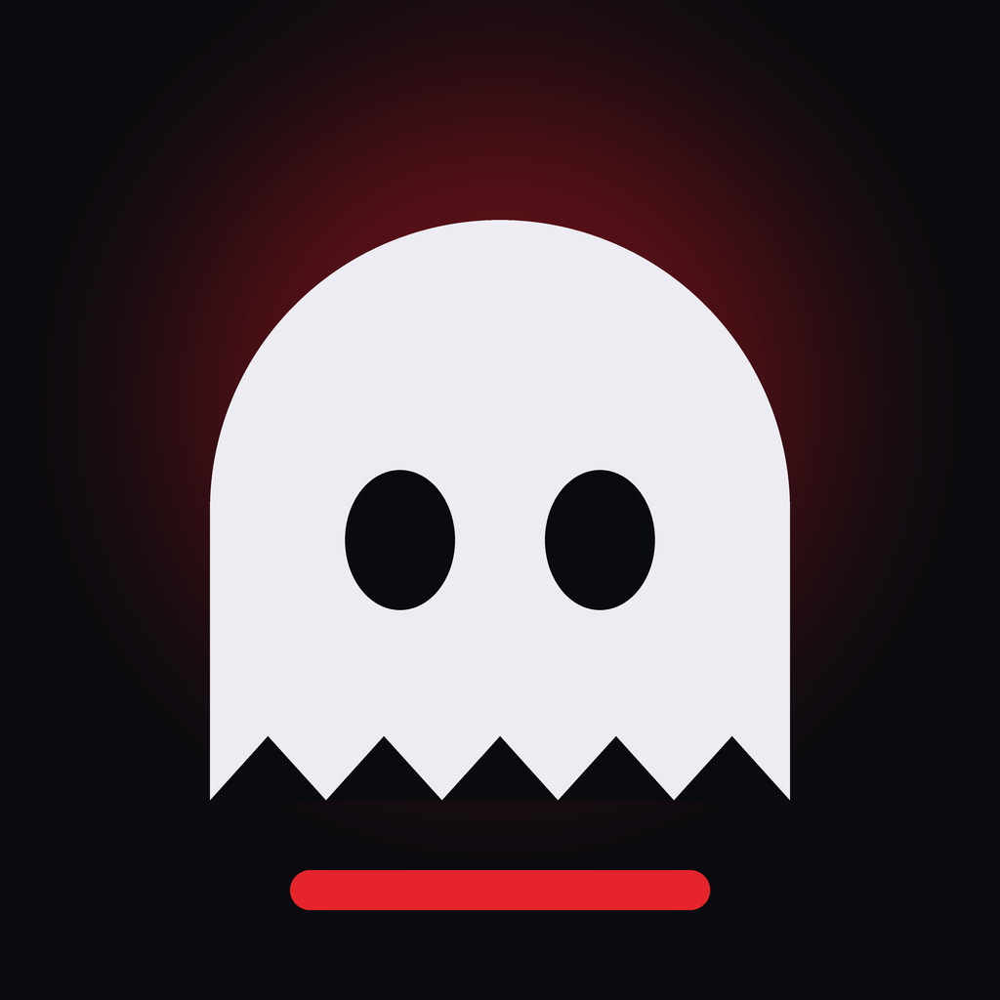

Scary Stories · Historias de MiedoPolítica de privacidad
1. Resumen
«Scary Stories» es una herramienta personal que funciona en el ordenador de su propietario y publica vídeos en sus propias cuentas. No tiene usuarios externos, no vende ni comparte datos y no usa publicidad ni rastreadores.
2. Datos que trata
- Credenciales de acceso de las plataformas (tokens de TikTok y YouTube) que el propietario autoriza al conectar sus cuentas. Se guardan cifrados, solo en su ordenador.
- Información básica de la cuenta que devuelve la plataforma (identificador y nombre visible), para saber en qué cuenta se publica.
- Datos de los vídeos publicados (identificador, enlace y estado de la publicación) y sus métricas (visualizaciones, me gusta, comentarios, compartidos…), para medir qué historias funcionan mejor.
No se tratan datos de otras personas: ni de seguidores, ni de quienes comentan, ni de terceros.
3. Para qué
Únicamente para publicar los vídeos del propietario en sus cuentas, consultar el estado de esas publicaciones y analizar su rendimiento.
4. Dónde se guardan y con quién se comparten
Todo se guarda localmente en el ordenador del propietario. Los datos solo se envían a TikTok y a YouTube, a través de sus API oficiales, en la medida necesaria para publicar y obtener métricas. No se ceden a nadie más.
5. Conservación y borrado
Los datos se conservan mientras la herramienta esté en uso. Al desconectar una cuenta se eliminan sus credenciales, y el permiso también puede revocarse desde la configuración de la plataforma (en TikTok: Ajustes y privacidad → Seguridad → Apps con permiso).
6. Contacto
CONTACT_EMAIL
Privacy Policy
1. Summary
“Scary Stories” is a personal tool that runs on its owner's computer and publishes videos to the owner's own accounts. It has no external users, does not sell or share data, and uses no ads or trackers.
2. Data processed
- Platform access credentials (TikTok and YouTube tokens) that the owner authorizes when connecting their accounts. Stored encrypted, only on the owner's computer.
- Basic account information returned by the platform (identifier and display name), to know which account is being published to.
- Published video data (identifier, link and publishing status) and its metrics (views, likes, comments, shares…), to measure which stories perform best.
No data about other people is processed: not followers, not commenters, not third parties.
3. Purpose
Only to publish the owner's videos to their accounts, check the status of those posts and analyze their performance.
4. Storage and sharing
Everything is stored locally on the owner's computer. Data is only sent to TikTok and YouTube, through their official APIs, as needed to publish and to retrieve metrics. It is not shared with anyone else.
5. Retention and deletion
Data is kept while the tool is in use. Disconnecting an account deletes its credentials, and access can also be revoked in the platform's settings (on TikTok: Settings and privacy → Security → Apps with permission).
6. Contact
CONTACT_EMAIL